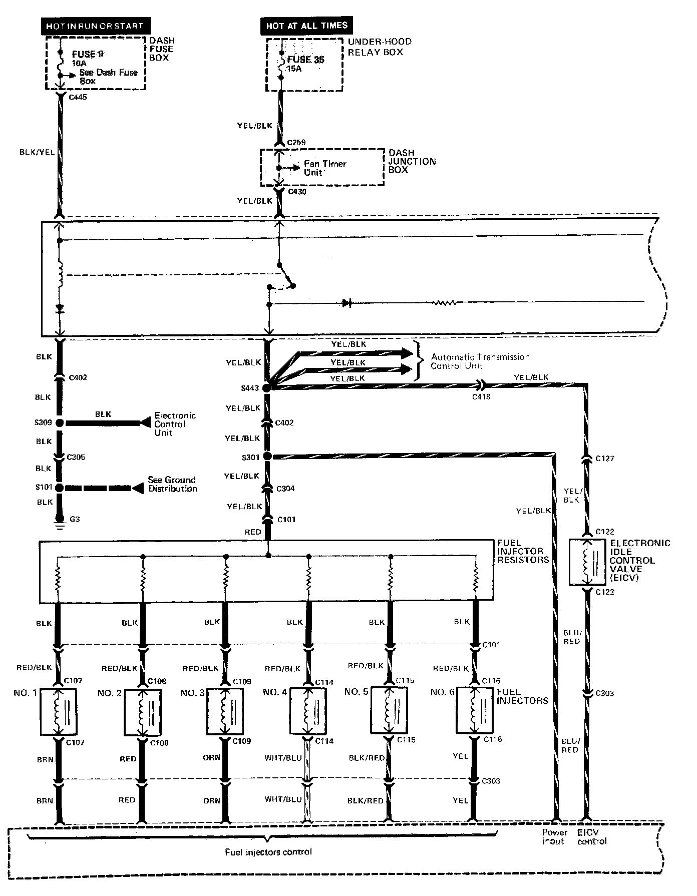
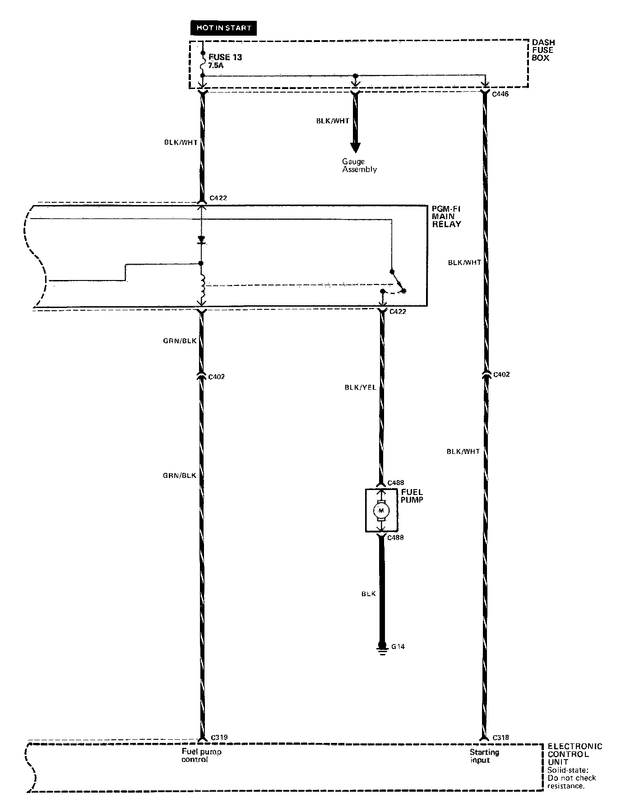
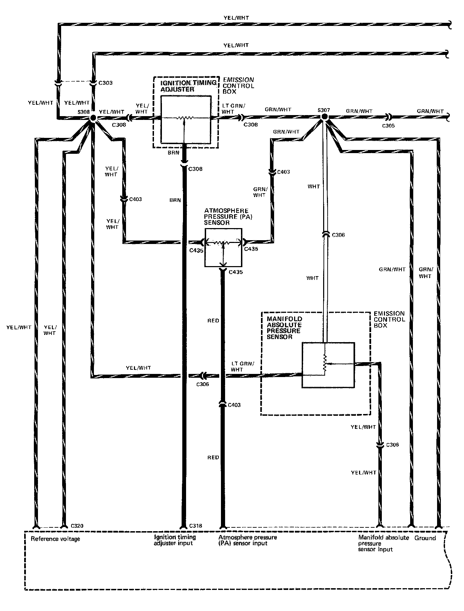
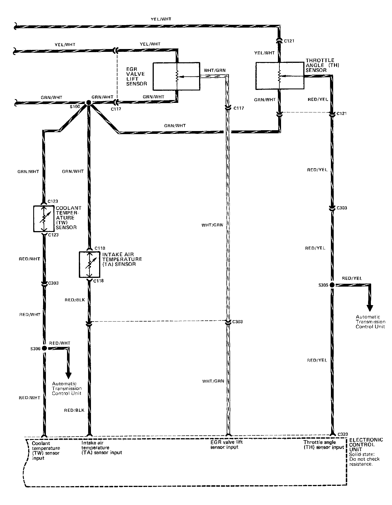
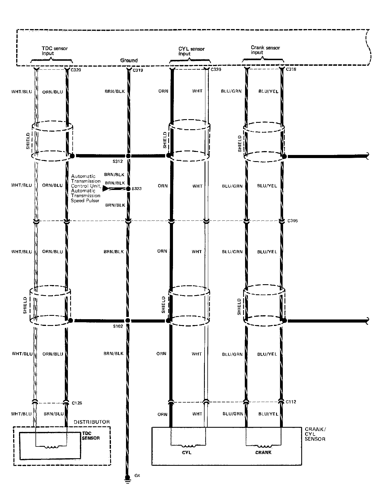
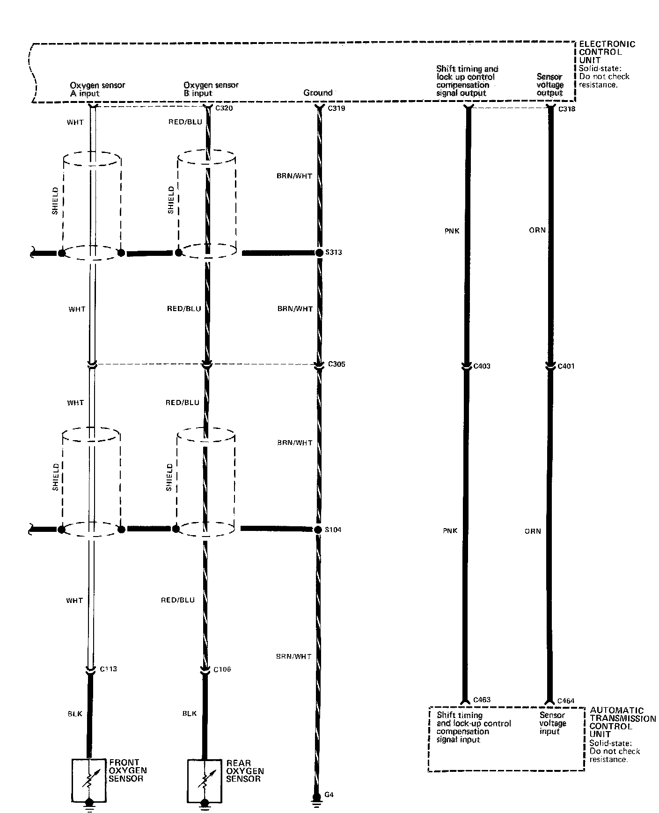
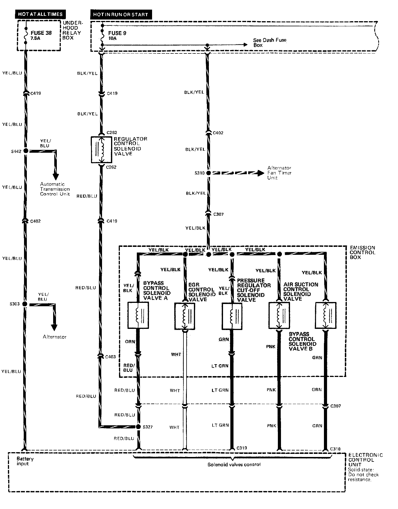
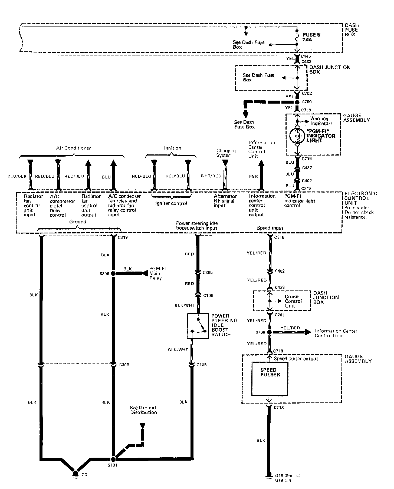
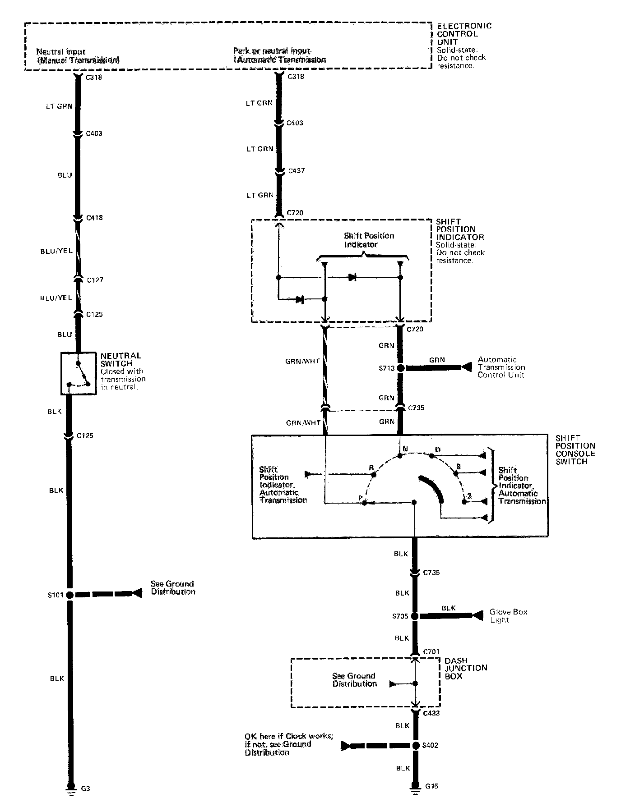

Electrical Diagrams
Circuit Schematic 1 of 9:

Circuit Schematic 2 of 9:

Circuit Schematic 3 of 9:

Circuit Schematic 4 of 9:

Circuit Schematic 5 of 9:

Circuit Schematic 6 of 9:

Circuit Schematic 7 of 9:

Circuit Schematic 8 of 9:

Circuit Schematic 9 of 9:
